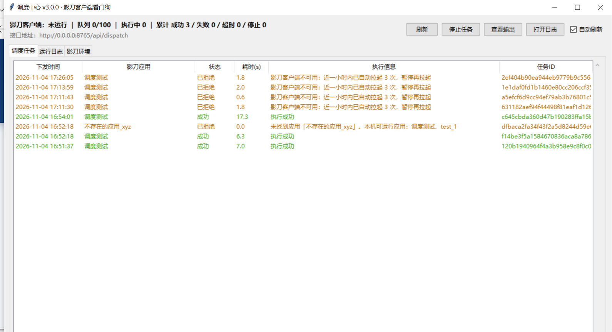
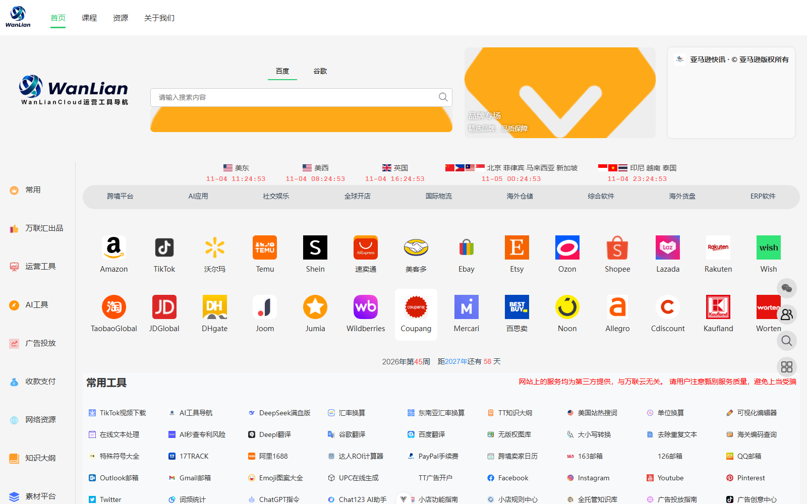

点击图片切换「适应屏幕 / 原尺寸」，点击背景或按 Esc 关闭
73 个 RPA 自动化应用覆盖 6 条业务线，调度中枢统一接单并守护客户端，直播互动、专项技能与智能体各自守住一段流程；另有三类工程作品：智能混剪、网页设计与软件开发。
同一套自动化底座支撑多条业务线落地，各条线共用任务调度、客户端守护与数据留存能力：
覆盖视频剪辑与数字人、素材上云与飞书同步、广告计划、平台数据采集、财务报表等多条业务线，每个应用均标注名称与功能说明，支持关键词搜索与分类筛选。
| # | 应用名称 | 功能描述 |
|---|---|---|
| 1 | 文件丢失记录审查 | 删除素材库视频不存在记录 |
| 2 | 批量剪辑-智能生成草稿 | 线上版批量生成草稿 |
| 3 | 单机版-汇总任务-批量导出草稿 | 单机版草稿导入本地剪映草稿 |
| 4 | 汇总任务-批量导出草稿 | 添加多个子草稿汇总导出 |
| 5 | Excel格式化-批量执行-数字人生成 | 文案+数字人批量生成完整表格信息 |
| 6 | 单机版-剪映_自定义导出草稿视频 | 单机版自定义文件夹导出草稿 |
| 7 | 单机版-剪映工程文件获取-路径替换 | 共享盘获取剪映草稿到本地剪映，替换素材路径 |
| 8 | 导入计划名-全平台 | 拉取草稿到本地并导出成片视频 |
| 9 | 单机版-导入计划名-全平台 | 单机版导入计划名称至飞书 |
| 10 | 智能字幕-剪辑部-素材更新至飞书-ai分析 | 剪映vip智能识别字幕更新至数据库 |
| 11 | 批量执行-情景对话_数字人生成 | 批量生成数字人视频 |
| 12 | 批量执行-数字人生成-情景对话2 | 批量生成数字人视频，视频数字人情景对话 |
| 13 | 本地版-自动拉取草稿 | 拉取草稿至本地 |
| 14 | 自动拉取草稿 | 共享盘拉取草稿到本地剪映 |
| 15 | 批量下载-数字人生成 | 线上版-下载数字人视频 |
| 16 | 剪映_导出草稿视频 | 剪映本地自动导出视频 |
| 17 | 批量执行-数字人生成 | 线上版-生成数字人视频 |
| 18 | 视频真实路径替换-剪辑 | 本地草稿加载素材 |
| 19 | 剪辑部-素材切分 | — |
| 20 | 筷子-生成视频-多附件 | 筷子生成视频 |
| 21 | 剪辑-自动化--任务导入语音转换--脚本去水印 | — |
| 22 | 剪辑-自动化--软件封面去水印 | — |
| 23 | 剪辑-自动化--音频生成 | — |
| 24 | 剪辑部-素材更新至飞书-数字人 | 剪辑部素材更新至飞书 |
| # | 应用名称 | 功能描述 |
|---|---|---|
| 1 | 本地-DeepSeek-剪辑部-素材更新至飞书-ai分析 | 新批量剪辑素材中心视频上云 |
| 2 | 剪辑部-素材更新至飞书-定时压缩-素材上云 | 历史素材库视频上云 |
| 3 | DeepSeek-剪辑部-素材更新至飞书-ai分析 | 调用deep seek生成字幕更新数据库 |
| 4 | COS_jpg上传 | — |
| 5 | OSS上传 | 文件上云 |
| 6 | 剪辑部-素材更新至飞书 | 剪辑部-素材更新至飞书 |
| # | 应用名称 | 功能描述 |
|---|---|---|
| 1 | 本地-vivo灵活自动创建计划 | 本地版vivo自动创建计划 |
| 2 | 巨量千川自动计划 | 千川自动上计划 |
| 3 | oppo自动创建计划 | oppo自动创建计划 |
| 4 | vivo灵活自动创建计划 | vivo自动创建计划 |
| 5 | vivo-视频库加载 | vivo账号视频加载至数据库 |
| 6 | vivo-汇总数据 | vivo账号数据汇总采集 |
| 7 | vivo数据采集-今日-消耗数据采集 | vivo账号今日消耗采集 |
| 8 | vivo计划-任务导入 | vivo计划导入任务至飞书 |
| 9 | vivo计划自动创建 | vivo计划自动创建 |
| # | 应用名称 | 功能描述 |
|---|---|---|
| 1 | 电商后台-京东-日期可选 | 京东后台数据win |
| 2 | 抖音-后台视频数据-黄-2026-09-17 | 抖音后台数据采集 |
| 3 | 筷子--账号视频采集--30 | 筷子账号视频采集 |
| 4 | 筷子--账号视频采集 | 筷子账号视频采集 |
| 5 | 筷子-创意视频抓取 | 筷子创意视频抓取 |
| 6 | 公众号-后台视频数据 | 公众号后台视频数据采集 |
| 7 | 拼多多-交易数据 | — |
| 8 | 今日头条-后台视频数据 | 今日头条-后台视频数据采集 |
| 9 | 小红书-后台视频数据 | 小红书-后台视频数据采集 |
| 10 | 百家号-后台视频数据 | 百家号-后台视频数据采集 |
| 11 | 快手-后台视频数据 | 快手-后台视频数据采集 |
| 12 | 视频号-后台视频数据 | 视频号-后台视频数据采集 |
| 13 | 抖音-后台视频数据 | 抖音-后台视频数据采集 |
| 14 | 拼多多-差评&申诉数据收集 | 拼多多-差评&申诉数据收集 |
| 15 | 创量素材分析 | 创量素材数据采集 |
| 16 | 电商后台数据-拼多多--网页--副本 | 拼多多电商后台数据采集 |
| 17 | 二类电商后台-百度--代理 | 二类电商后台-百度--代理数据采集 |
| 18 | 电商后台数据-拼多多--网页--精油小店备份 | 拼多多电商后台数据采集 |
| 19 | 二类电商后台-百度 | 百度后台数据采集 |
| 20 | 大旗 | 大旗账号数据采集 |
| 21 | 京东破价--夜间 | — |
| 22 | 电商后台-美团 | 美团后台数据采集 |
| 23 | 拼多多 | 拼多多破价查询 |
| 24 | 京东破价 | — |
| # | 应用名称 | 功能描述 |
|---|---|---|
| 1 | 财务部-电商-数据库回填飞书 | 财务数据回填飞书 |
| 2 | 财务部-每日数据初始化 | 初始化飞书表格 |
| 3 | 好又多--后台--财务 | 好又多--后台--财务报表下载 |
| 4 | 电商后台-美团--财务 | 美团财务报表下载 |
| 5 | 二类电商后台-百度--财务 | 百度财务报表下载 |
| 6 | 电商后台-京东--财务 | 京东财务报表下载 |
| 7 | 电商后台数据-拼多多--网页--财务 | 拼多多财务报表下载 |
| # | 应用名称 | 功能描述 |
|---|---|---|
| 1 | ZSS短信 | — |
| 2 | 拼多多-评价回复 | — |
| 3 | Mysql_Feishu | 指令合集 |
把"跑自动化"变成一次接口调用：调度中心以常驻服务接收任务请求，看门狗全程守护 RPA 客户端，任务从接收、排队、执行到结果回传全程可视、可查、可停止。

业务系统、命令行工具或页面通过 HTTP 提交任务，指定应用名与任务参数。
接单校验、排队调度、状态机管理、任务持久化，返回任务编号供实时查询。
常驻守护 RPA 客户端：巡检运行状态、按名称定位应用、发起执行并跟踪进度。
实际运行自动化应用，回传执行结果与输出，异常由中枢统一记录。
服务启动后长期在线，接口即可提交任务，无需人工点击；单进程可长时间运行，适合无人值守场景。
持续守护 RPA 客户端运行状态，发现异常自动拉起；拉起动作带限频保护，避免客户端反复重启影响在跑任务。
支持自动、命令查询、本地扫描三种定位方式：优先通过客户端接口枚举应用清单，不可用时回落本地扫描匹配，调用方只需给出应用名称。
调用客户端命令发起任务，执行过程中实时刷新状态与输出，进度随时可查，支持手动停止。
任务贯穿排队中、运行中、成功、失败、超时、已停止、已拒绝七种状态，任一时刻状态唯一、可追溯，避免"黑盒执行"。
任务按提交顺序依次执行，保证每台机器的资源独占，互不抢占；接入量突增时按受理规则给出明确答复与原因，不让业务侧在无回应的状态里反复重试。
任务结束可回调指定地址通知调用方；网络异常时结果进入本地待发队列，恢复后自动补发，不丢结果。
既可作为无界面服务常驻，也提供图形化控制台：任务列表、状态筛选、执行日志、手动停止一屏掌控。
任务与状态统一落库存储，采用高可靠写入方式，服务重启后任务记录与状态不丢失。
记录调用来源、任务动作与执行结果，日志按大小自动轮转保留多份，便于事后复盘与问题定位。
| 接口 | 用途 |
|---|---|
| GET/api/health | 健康检查，返回客户端运行状态与任务统计，常用于探活与监控接入 |
| GET/api/apps | 列出本机可调度的应用清单，支持强制刷新，便于调用方确认应用名称 |
| POST/api/dispatch | 提交调度任务：指定应用名称与任务参数，返回任务编号供查询 |
| GET/api/tasks | 任务列表，可按状态、应用名称过滤并分页，用于列表展示与对账 |
| GET/api/tasks/{task_id} | 查询单个任务的详细状态与执行输出，调用方轮询此接口获取结果 |
| POST/api/tasks/{task_id}/stop | 停止指定任务，返回受理结果，用于人工介入或异常处置 |
| GET/api/stats | 按状态汇总任务数量，可直接用于运营看板与日报统计 |
返回体中携带任务编号与初始状态，随后按编号轮询即可获取最终结果；提交方无需了解客户端细节。
命令行工具按"命令行参数 → 环境变量 → 本地配置"的优先顺序取用地址，运行时会打印当前使用的地址来源，便于排查联调问题。
在一台机器部署调度中枢并配置监听地址；对局域网开放后，其他机器可通过本机地址访问。
每台安装 RPA 客户端的机器运行看门狗，指向中枢地址，自动注册为可执行端并上报状态。
默认仅本机可用健康检查；如需对外提供服务，可开启口令校验并限定访问来源。
中枢以常驻方式运行并加入开机自启，配合看门狗自愈，实现长时间无人值守。
看门狗常驻调度、任务七态状态机、应用自动定位、结果回传与补报、图形化控制台、局域网多机接入。
多执行端统一纳管与负载分配、任务优先级编排、批量任务编排与依赖关系、异常自动重试策略。
运行看板与告警通知（企业微信 / 飞书）、任务耗时与成功率分析、面向业务侧的自助提交入口。
接入直播间后自动采集弹幕与互动事件，把"刷屏"转成结构化数据，并联动 AI 回复与语音播报，帮助主播在长时间直播中稳定保持互动节奏。
以长连接方式接入直播间，自动完成连接参数生成，无需人工复制粘贴；开播即采集，支持中途加入。
把原始消息解析为统一事件模型，按弹幕、进场、点赞、关注、礼物、在线统计等类型分流处理。
结合直播间上下文与主播人设生成回复内容，回复策略可按场景切换，避免千篇一律的机械应答。
文本实时转语音并本地合成播报，低延迟、可打断，适合长时间直播持续口播。
5 秒心跳保活、断线指数退避重连、队列背压上限 500 条、洪峰只处理最新消息，保障数小时直播不断档。
支持运行时开关播报、切换回复策略、控制采集开始与停止，控制器事件即时生效。
弹幕与事件可落库留存或推送下游系统，支撑场次复盘、话术优化与用户画像沉淀。
事件流可直接交给场控智能体决策，由智能体决定回复内容与互动节奏，形成"感知—决策—响应"闭环。
建立并维持直播间长连接，生成连接参数，持续接收原始消息帧。
按协议解析消息体，转换为统一数据结构，过滤无关噪声。
按事件类型分发，配合队列背压与洪峰降级策略，保证处理不堆积。
AI 生成回复、语音播报、数据落库，多路并行输出。
| 事件类型 | 含义 | 业务用途 |
|---|---|---|
| chat | 观众弹幕 | 实时互动主通道，可触发 AI 回复与语音播报 |
| member | 观众进场 | 识别新进观众，用于欢迎话术与拉新统计 |
| like | 点赞互动 | 衡量直播间热度，可触发感谢型回复 |
| follow | 关注动作 | 记录涨粉节点，配合引导话术巩固转化 |
| gift | 礼物打赏 | 识别高价值观众，触发专属致谢与记录 |
| stats | 在线统计 | 实时在线人数与热度，用于节奏调控 |
| control | 控制指令 | 运行时开关播报、切换策略、启停采集 |
| room_close | 直播间关闭 | 触发收尾流程，保存场次数据并退出采集 |
直播助手/ ├── main.py 采集入口：连接直播间、输出事件 ├── main_agent.py 智能入口：事件接入场控智能体 ├── chat_app.py 交互入口：图形化弹幕面板 └── danmaku/ ├── signature/ 连接参数生成 ├── core/ 连接管理与协议解析 ├── pipeline/ 事件管道与背压控制 ├── output/ 数据输出与落库 ├── agent/ 回复策略与人设 └── tts/ 语音合成与播报
| 心跳保活 | 5 秒一次心跳，及时发现连接静默 |
| 断线重连 | 指数退避重连，避免高频重试放大故障 |
| 队列背压 | 缓冲上限 500 条，超出即丢弃旧消息保护内存 |
| 洪峰降级 | 弹幕暴涨时只处理最新消息，保证响应时效 |
| 优雅退出 | 收到关闭事件后保存数据、释放连接再退出 |
| 运行形态 | 命令行采集、智能体联动、图形面板三种入口 |
把高频、重复、易出错的操作沉淀为独立技能包：每个技能有清晰的适用场景、执行步骤与标准产物，可单独调用，也可被业务流程编排串联。
需要批量获取可用数字人形象清单时使用，一次性完成检索与整理，省去逐页人工翻找。
可用形象清单，含名称、关键属性与来源记录，可直接供后续选型使用。
拿到脚本后需要快速挑选适配形象：按性别、年龄感、风格、场景、服装等 11 项条件维度组合筛选。
匹配候选名单与命中条件，帮助编导快速定角，减少来回沟通。
批量素材构图合规检查：测量人像头顶到画面顶部的留白距离，判断是否符合发布规格。
Excel 测量报表：文件名、头顶坐标、留白距离与判定结果，可直接用于质检归档。
智能体不是问答机器人，而是能"感知—决策—执行"的角色化程序：理解业务语境、调用自身知识、给出可落地建议，并在必要时直接驱动系统动作。
面向服饰零售的导购顾问：懂商品、懂搭配、懂尺码，能围绕顾客需求给出具体建议
以直播事件流为输入，判断哪条弹幕值得回复、用什么语气回复、是否需要播报，把互动从"人工盯屏"变成"系统值守"。
周期性巡检客户端与任务队列状态，发现异常按预设策略处置（拉起客户端、终止僵死任务、记录告警），把故障处理前置到发生之前。
智能体可调用 Skill 与调度中心接口，把"取数—判断—执行—回写"串成一条链路，让人只负责定规则，机器负责跑流程。
输入一段口播配音与对应文案，系统自动完成字幕句级切分、素材匹配与时间轴编排，直接产出可继续编辑的剪辑草稿：人只保留最后一遍审片与微调。
从口播音轨转出文字与时间轴，按语句边界切分并标注每条字幕的起止时刻。
字幕与音频两遍比对，修正转写偏移，产出可直接驱动画面的句级时间轴。
按每句语义检索素材库，选取与话术相符的画面片段，不相关句子留白待人工补位。
按文案节奏选择画面切换档位，决定每个镜头的停留时长与出现频次。
把编排结果写入剪辑工程结构，转场、字幕与音轨同步落位，产出可打开的草稿。
只有语义边界与字幕句对齐通过的片段才进入编排，相似度不足的句子不强行铺画面，从源头避免画面与话术错位。
按文案情绪与节奏划分画面密度档，切换间隔随档位自动伸缩：长句不躁、短促卖点不拖沓。
素材入点只允许前移补帧、不允许后移，保证画面对应话术，不出现"声音先到、画面后到"的观感断层。
按素材主题建立素材索引，同一素材可跨句复用并设出现上限，减少同类画面反复出现造成的重复感。
成片方案在生成前后各有一轮结构与字段校验，异常方案在写入草稿前被拦下，坏草稿不出库。
本地接口接收任务并调度整条流水线，可被外部流程按批调用，适合日常批量出片场景。
智能混剪/ ├─ config 素材库、模型与输出路径配置 ├─ aligner 字幕音频两遍对齐，产出句级时间轴 ├─ app 本地接口入口，接收任务调度流水线 ├─ sanitize_plan 成片方案结构校验与规整 ├─ pip_draft 编排结果写入剪辑草稿结构 └─ 素材库 画面素材与索引
| 服务层 | Python + Flask，本地接口接收成片请求并调度 |
| 数据层 | MySQL 管理素材、台词与成片方案索引 |
| 方案生成 | 接入通用大模型，结合字幕语义产出剪辑方案 |
| 草稿输出 | 剪辑工程草稿结构写入，产出可继续编辑的工程 |
| 运行形态 | 单机部署，素材与工程全部落本地目录 |
面向跨境电商卖家的一站式资源导航门户：以模块导航加分区内容的方式聚合平台工具、选品资源、运营素材与资讯入口，业务模块可长期扩展而不破坏整体结构。

站点标识、主入口与快捷操作集中于此，滚动时保持可用，不打断浏览节奏。
左侧模块导航承载全部分区入口，当前所在分区实时高亮，指示器随滚动位移。
主内容区按 22 个业务模块分区组织，资源位、专题位、榜单与工具入口按运营节奏编排。
站点信息、友情链接与说明分区排布，长页面浏览到底仍有明确出口。
跟随视口宽度自适应排列，同一套结构从宽屏多列平滑过渡到移动端单列，无需另做移动版。
同一页面容纳多类资源而不显拥挤：同类信息聚成卡片，跨类信息以分区隔断，视觉层级清晰。
图标与装饰图形全部矢量自绘，风格统一、加载轻量，不受第三方图库更新影响。
导航指示器带位移动画，内容滚动进入视口时按需触发呈现，长页面的首屏感受更轻快。
门户站点/ ├─ 组件层 导航、轮播、资讯条、内容块、图标 ├─ 页面层 22 个业务分区的独立内容块 ├─ 样式层 组件内作用域样式与统一色板 ├─ 交互层 锚点跳转、指示器跟随、视口懒加载 └─ 后台服务 用户与内容管理接口
| 前端框架 | Vue 3 组合式开发，单文件组件按模块拆分 |
| 构建工具 | Vite，本地构建与热更新，产出可部署产物 |
| 样式方案 | 组件内作用域样式，配合统一色板与间距规范 |
| 交互实现 | 锚点跳转、导航指示器跟随、视口懒加载 |
| 后台服务 | Flask 应用工厂模式 + 数据模型与版本化迁移 |
按业务场景选技术栈落地：要离线稳定运行的做桌面端，要多人协同的做浏览器端管理系统，要承接多任务与长连接的做服务端，零散重复的动作沉淀成可复用工具。
Python 3 + tkinter，界面 Canvas 全自绘、零第三方依赖，19 个文件、约 4,800 行。主聊天窗与桌面悬浮形象双窗口，本地知识库加权检索配合模型对话适配，聊天记录与窗口状态本地留存，断网时自动回落本地知识库作答。
Python + tkinter，打包为独立可执行程序，约 1,500 行。定时拉取数据、按关键词监测异动，以桌面置顶悬浮窗展示，不占屏、不打断手上工作。
Python + tkinter + SQLite，约 630 行，打包为 Windows 可执行程序。支持直链与站点链接批量下载、仅提取音频、实时进度与中途取消，下载历史本地留存可续查。
C# / WinForms 三个工程：汽车报价查询系统（多表数据查询与筛选界面）、图片批量处理、数据库连接演示，作为界面布局与控件编排的实操沉淀。
Python + Flask + SQLAlchemy + SQLite，20 个页面模板、约 2,000 行。覆盖收货、质检、上架、领料、拣货、发货、盘点全流程；多角色权限划分至主管、仓管、质检、生产、计划、财务、IT；批次与效期管理、ABC 分类与安全库存、库位编码、条码生成打印、报表与外部系统对接页齐备。
Vue 3 + Vite + Element Plus + 路由与状态管理，27 个文件、约 2,600 行。对标服务端版的七大业务模块做纯前端实现，路由与状态齐备，数据本地持久化，刷新不丢单。
Python 标准库 HTTP 服务 + SQLite 作为唯一事实源 + 本机看门狗客户端，38 个文件、约 6,300 行。服务端只负责接收请求与路由，看门狗守护自动化客户端，长轮询取任务后启动、跟踪并回报执行结果；支持界面与服务两种运行方式，含守护进程与打包脚本。
Python 标准库实现、无第三方依赖，11 个文件、约 3,700 行。HTTP 常驻服务接收任务，自动查找并启动本机自动化应用，监控执行结果并回报状态，是现网调度能力的起点。
Python + Flask 应用工厂模式 + SQLAlchemy + 版本化迁移。用户与内容管理接口齐备，数据库结构变更走迁移脚本，为门户站点提供稳定数据支撑。
Python + WSS 长连接，握手与事件解析分层隔离，31 个文件、约 2,500 行。只读采集弹幕、进场、点赞、关注与礼物事件；心跳应答、守护进程与退避重连保证长时间稳定；统一事件结构并做过滤去重，可直接对接下游处理流程。
基于开源影视解说框架做二次开发，Python + 界面层 + 容器化部署。完成本地化部署与流程改造，串联文案生成、配音、字幕与草稿产出，接入自有素材与文案流程。
Python + 目标检测模型，完成批量目标检测与图像融合出图，替代逐张人工核对，适合素材初筛与批量处理。
Python 脚本集合：表格数据批量入库、页面结构解析、文本与链接批量提取，按需组合使用，减少手工搬运。
已上线的能力不停在能用就好：围绕运行可观测、异常感知、角色边界与素材复用四个方向做工程上的深化与方法上的探究，直接作用于现有模块的运行质量。
在现有任务与执行记录基础上统一统计口径，把任务量、成功率、耗时与并发情况放到同一屏，为运营判断提供数据依据。
深化方向研究异常分级与通知节奏的配合方式，使任务连续失败、客户端离线、队列积压等情况在第一时间被感知并处理。
深化方向研究按岗位划分可见范围与操作边界的实现方式，让不同角色只看到与自身职责相关的能力与数据。
深化方向研究数字人形象、成片素材与脚本模板的统一编目方式，提高素材复用率，减少重复生产。
深化方向在人工规则与模型判断之间找分工：哪些环节交给模型更稳，哪些环节保留规则更可控，形成可复用的组合方式。
研究方向研究哪些能力适合落在现场端离线运行、哪些适合集中到服务端统一管理，让部署方式与使用场景匹配。
研究方向把反复出现的流程抽成可组合的组件，研究模块边界与接口粒度，降低新场景的搭建成本。
研究方向把交付环节的自检清单、部署步骤与操作要点固定下来，使同类项目质量水平一致。
研究方向